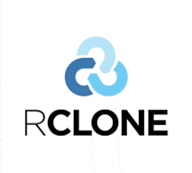

RClone BackupPrivacy Policy
Last updated: October 9, 2026
This Privacy Policy describes how RClone Backup (“the Application”) handles information when you use it. The Application is a personal backup tool built on top of rclone that copies files from your computer to your own Google Drive.
Information we access
When you sign in with Google, the Application requests access to your Google Drive solely to upload, list, update and restore the backup files you choose to back up. The Application may also read basic account information (such as your email address) to identify the connected account.
How we use information
Google user data is used only to provide the backup and restore functionality you have configured. We do not use it for advertising, analytics, profiling, or any other purpose.
Storage and sharing
The Application runs on your own device. Your files are transferred directly between your device and Google Drive. OAuth tokens are stored locally on your device in the rclone configuration file. We do not operate servers that receive, store or process your files or Google user data, and we do not sell, rent, or share your data with any third parties.
Limited Use disclosure
RClone Backup’s use and transfer of information received from Google APIs to any other app will adhere to the Google API Services User Data Policy, including the Limited Use requirements.
Data retention and deletion
Backup files remain in your Google Drive under your control and can be deleted by you at any time. You can revoke the Application’s access at any time on the Google Account permissions page and remove the local rclone configuration from your device.
Security
All communication with Google APIs is encrypted using HTTPS. You are responsible for keeping your device and local configuration secure.
Changes to this policy
We may update this Privacy Policy from time to time. Changes will be published on this page with an updated date.
Contact
If you have any questions about this Privacy Policy, please open an issue at github.com/bbird1980/rclone-project-public.